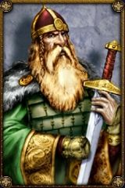

kusato
Age : 45
Sexe : Homme
Race : Nain
Faction : Alliance
Formation : Voleur
Description : Je suis né dans l'auberge qui appartient à mes parents depuis toujour, je suis né dans la cave et la premiére odeur que j'ai sentit fut celle de la biére, cette odeur me suivra d'ailleur tout au long de ma vie...J'ai passé mon enfance dans cette même auberge avec mon frére helvarg, et notre jeunesse fut bercé par les contes des anciens rois nains que nous racontais notre pére, ces histoires me passioné plus que tout et tout jeune déja je juré de devenir comme l'un de ces seigneurs. Puis mon frére partit s'engager comme montagnard a Ironforge et pour tuer le temps, j'aider mes parents a la taverne, c'est là que j'appris l'art du vol, du lancer de couteau et du combat. L'ambiance de la taverne me plaisait particulierment et très vite je m'y fit ma place. Mais les bonnes choses ont une fin, et mes parents, voyant que je devennais assez robuste pour affronter le monde exterieur, m'envoyère par delà les montagnes pour rejoindre mon frére, se que j'aurais fait bien volontier; mais mon coeur me disait que j'étais fait pour une autre vie que celle de montagnard, et je décida ainsi de me cacher dans les montagnes pendant 3 ans pour me perfectionner au combat.
C'est ainsi que se déroula mon enfance, après ces 3 années sabattiques, j'alla a Ironforge pour voir mon frére mais on m'appris qu'il avait été capturé par une troupe de mort vivant, dieu seul savait se qu'il lui était arrivé ensuite. J'érrais donc dans Ironforge attristé par cette funeste nouvelle quand un tunnel m'intriga particuliérement, je penetrais à peine a l'interieur qu'un gnome me poussa en avant en me criant que j'étais en retard. j'atterit dans une nacelle metallique, et quand je resortit, je me trouver dans un tout autre endroit: Stormwind.
L'ambiance et la gaieté de cette ville m'envouta, et je décida que c'était ici que je ferrais fortune! Mais arrivé sans le sou dans cette ville, la réalité m'apparut assez vite; je finirais mendiant tout au plus. Et c'est la que j'ai rencontré un compatriote nain, nommé Rumwald qui m'aida, qui m'offrit le gîte et le couvert. Nous devînmes ami, et avec lui, j'eu pour idée d'ouvrir..... une maison de jeu!
L'histoire s'arréte là, la suite... c'est le destin qui nous la dira!
quoi qu'il en soit, excuser moi pour la qualité médiocre de l'écriture...
si vous passer dans stormwind, venez jeter un coup d'oeil dans ma maison de jeux =) je posterais un message sur le forum pour indiquer le lieu exacte et les horaires d'ouvertures.
svp aider nous a faire marcher la seul maison de jeu de kirin tor !
perder autant de sou qu'il vous plaira chez nous, nous sommes la pour sa!
Plus d'infos sur kusato >>>Lire les 3 récits de kusato >>>
therion
Age : 1689 ans
Sexe : Homme
Race : Elfe
Faction : Alliance
Formation : Chasseur
Description :
Viens l'ami entre je t'en pris et prend un verre de bourbon je crois que sa te fera du bien!
Sa fait toujours du bien à un nain et à toi en particulier , bon.......
sa y est tu en à pris,oui? bon alors commençons !
Je suis né dans les confins de Ashenval, ma mère est morte en me mettant au monde,c'est mon père qui ma élevé et c'est lui qui ma appris l'art de la chasse....c'est grâce a lui que je suis se que je suis aujourd'hui .....
mais mon père a maleureusement été tuer par un loup que l'on surnommé "Terrowolf"c'était le chef de la meute de loup qui saccageait auberdine en des temps plus ancien.
je jura sur l'honneur de mon père que je vengerai sa mort.
Pendant de longues années je m'entraina a tuer pour pouvoir un jour affronter ce loup et le tuer!!!
A l'age de 851 ans je parvins à retrouver la trace de la bête et je la traqua pendant de long mois.
Quand je la rattrapa enfin il était entouré de sa meute, je du tous les tuer ce qui me laissa de nombreuses cicatrices témointes de ma lutte acharnée.Une fois la tête de la bête entre mes mains,je retourna à la tombe de mon père j'y déposa la tête de la créature.
Tous cela terminer je partie d'Ashenval et je ne voulut pas y retourner avant de très nombreuse années.
Je partit donc pour stormwind et m'engagea pendant un ans en temps que soldat dans le fort d'aile d'argent où c'est la que je vous rencontré
Vous vous rappeler?
pendant une invasion orc je vous ai soutenue et c'est grâce à vous que je suis encore en vie,vous m'avez même proposé du travail dans une maison de jeux.
[i]Merci du fond du coeur Kusato.
Plus d'infos sur therion >>>